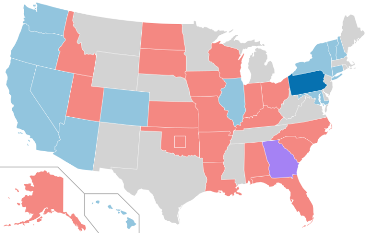
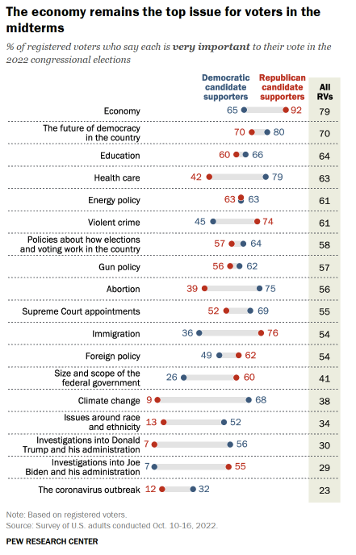
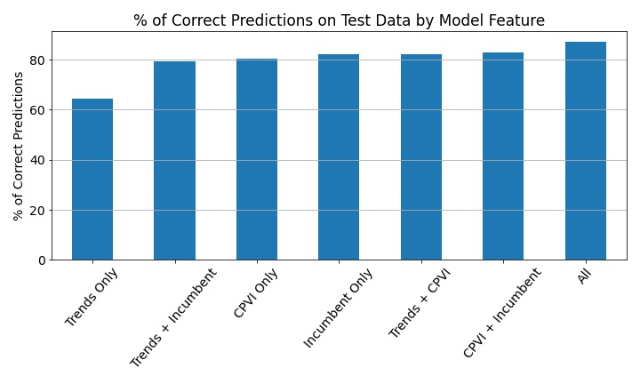

November 17, 2022
Google Trends is a great tool for research and SEO, but can it predict elections? I trained a model on the Cook Partisan Voter Index and Google Trends data to see what power it had in predicting the 2022 Senate race
On the morning of election day, I posted predictions for the United States Senate, which were 97% accurate (all the seats, except as of now: Alaska, but we’ll discuss how that went awry later). I know what you’re thinking, “The Georgia election is undecided; it’s going to a runoff election”; however, Raphael Warnock won the majority of the votes. The prediction model wasn’t sophisticated enough to factor in the idiosyncrasies of the Georgia election process, so I’m counting it!
You can see my predictions below.

And here is the current result.
In the months leading up to the election, the media channels began forecasting a ‘red wave’ as voters’ concerns veered toward issues that favor Republican campaigns. The prevailing theory was that salient media coverage of crime and economic downturn increased Republican chances while waning coverage of abortion and “the future of democracy” disadvantaged Democrats. To confirm what people were thinking about, I entered these top to Google Trends assuming search volume is a good proxy for relative interest — after all, the 50 billion dollar search engine optimization industry is predicated on this. Unsurprisingly, the pundits were right; searches for “crime” and “inflation” had surpassed “abortion” since its summer peak. I thought, perhaps, I could use search volume activity to predict the next candidate.
As I searched for how voters’ primary concerns affect their decision at the polls, I came across this recent poll, published by Pew Research, analyzing the top issues of voters by their political alignment.
This poll reminded me that voters are more nuanced than the analysts often lead on. There is no quantitative method to translate an issue’s saliency to votes, or at least no method I could accomplish. Republican-identifying voters may care more about violent crime than a Democrat-identifying voter, but that doesn’t mean a crime-concerned undecided voter votes Republican with certainty.
Top issues were not going to be a good predictor of the election. However, I could compare searches of the candidates themselves as a predictor. There has been some research to back this up as well. One study found that Google Trends scores have correctly predicted presidential elections since 2004. I wanted to see its predictive power for Senate elections.
Methodology & Testing
For each Senate election since 2006*, I recorded the following data about the winner and runner-up:
- Their political party (or the party with which they caucus/align themselves).
- Their state’s average compared Google Trends score: 7, 15, and 30 days before the election.
- The state’s Cook Partisan Voting Index CPVI score.
- Whether or not they were an incumbent.
Then I trained a Random Forest model on the data. The model would then take in the Google Trend score, the CPVI score, and incumbency to predict which candidate would win the election.
When testing the model, the Google Trends data was not very predictive. It only predicted the correct candidate 64% of the time; however, when combined with CPVI and incumbency, it did slightly improve the prediction rate to 87% from 84%.
This makes intuitive sense if we view a swing voter as a microcosm of their state electorate: the Trends score is their interest in each candidate and the CPVI is their political leaning. Even if they’re slightly more interested in a candidate, for whatever reason, it may not be enough to vote for someone less politically aligned with them. That is what we see when testing the model. The Google Trends data improves model performance when CPVI is low.
Issues with Trends Data
- The model was designed to predict a Democrat or a Republican. Although some mainstream candidates run under ‘independent’ or ‘libertarian’ parties, they usually align or caucus with one of the parties (e.g., Bernie Sanders with Democrats and Rand Paul with Republicans). However, this setup caused issues with the 2022 Alaska election as the two main candidates were both Republicans.
- Google Trends compares searches as “topics” or “search terms”. Some candidates were not available for search as “topic”, so both candidates’ scores were recorded with their “search term” score.
- When recording the Google Trends score before the elections, their average scores were calculated differently from the archival calculation leading to lower scores for the 7-day average in the 2022 election.
Did Google Trends Predict the Election?
On election night, I found myself forgetting my political views and cheering on the model’s predictions. As the votes were coming in, I began to think Google Trends helpful in predicting the Senate elections, but when I looked at how the different models performed on the election I realized that the Google Trends data did not affect the prediction. The model with Google Trends and without performed the same.

Why didn’t Google Trends assist the election predictions? Well, when the error is only one wrong prediction (possibly wrong, the Alaskan votes have yet to be fully counted), there is not much room for improvement. The Google Trends data may not have improved the prediction result, but it did provide a more nuanced probability of that result.
| with Google Trends | without Google Trends | Results | |||
| State | Prediction | Probability | Prediction | Probability | Winner |
| ALASKA | MURKOWSKI | 0.56 | MURKOWSKI | 1.00 | TSHIBAKA |
| COLORADO | BENNET | 0.80 | BENNET | 1.00 | BENNET |
| GEORGIA | WARNOCK | 0.59 | WARNOCK | 0.58 | WARNOCK |
| N. C. | BUDD | 0.61 | BUDD | 0.79 | BUDD |
| N. H. | HASSAN | 0.65 | HASSAN | 0.90 | HASSAN |
| NEVADA | MASTO | 0.82 | MASTO | .98 | MASTO |
| OHIO | VANCE | 0.70 | VANCE | 0.93 | VANCE |
| PENNSYLVANIA | FETTERMAN | 0.61 | FETTERMAN | 0.59 | FETTERMAN |
| WISCONSIN | JOHNSON | 0.57 | JOHNSON | 0.86 | JOHNSON |
You can see that, for Alaska, the model with Google Trends gives Lisa Murkowski (who still might win) a much smaller chance of winning from the model using only CPVI and Incumbency. It just so happens that in this election, the Google Trends score was not enough to tip the prediction in another direction.
Future Elections
Elections are decided by swing voters, and swing voters are a smaller percentage of the electorate than they used to be. With political calcification at an all-time high, CPVI will likely be the best predictor for future elections as the swing from left to right narrows. Google Trends may improve predictions in states with low CPVI scores; however, with the swing voter population shrinking, swing voter search volume shrinks as well. It may be difficult to ascertain whether swing voters are included in the search volume advantage of a particular candidate. Another issue with using Google Trends is that it is only available for larger elections like President, Governor, or Senator as the Google Trends map does not allow for congressional district-level accuracy. While it does appear that Trends does improve the prediction model slightly, it is unclear whether it will continue to do so; we’ll just have to see in the next election.
∎